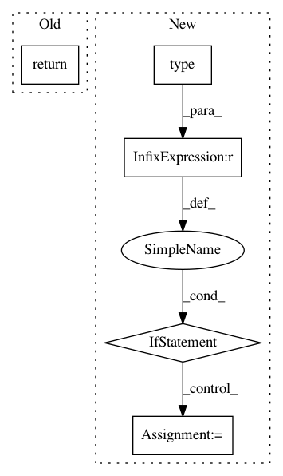

e356e97eb20caff7dc614d694903254951e914f1,rllib/evaluation/worker_set.py,WorkerSet,_make_worker,#WorkerSet#Any#Any#Any#Any#Any#,185
Before Change
tmp[k] = (policy, v[1], v[2], v[3])
policy = tmp
return cls(
env_creator,
policy,
policy_mapping_fn=config["multiagent"]["policy_mapping_fn"],
policies_to_train=config["multiagent"]["policies_to_train"],
tf_session_creator=(session_creator
if config["tf_session_args"] else None),
rollout_fragment_length=config["rollout_fragment_length"],
batch_mode=config["batch_mode"],
episode_horizon=config["horizon"],
preprocessor_pref=config["preprocessor_pref"],
sample_async=config["sample_async"],
compress_observations=config["compress_observations"],
num_envs=config["num_envs_per_worker"],
observation_filter=config["observation_filter"],
clip_rewards=config["clip_rewards"],
clip_actions=config["clip_actions"],
env_config=config["env_config"],
model_config=config["model"],
policy_config=config,
worker_index=worker_index,
num_workers=self._num_workers,
monitor_path=self._logdir if config["monitor"] else None,
log_dir=self._logdir,
log_level=config["log_level"],
callbacks=config["callbacks"],
input_creator=input_creator,
input_evaluation=input_evaluation,
output_creator=output_creator,
remote_worker_envs=config["remote_worker_envs"],
remote_env_batch_wait_ms=config["remote_env_batch_wait_ms"],
soft_horizon=config["soft_horizon"],
no_done_at_end=config["no_done_at_end"],
seed=(config["seed"] + worker_index)
if config["seed"] is not None else None,
_fake_sampler=config.get("_fake_sampler", False))
After Change
// Check for correct policy class (only locally, remote Workers should
// create the exact same Policy types).
if type(worker) is RolloutWorker:
actual_class = type(worker.get_policy())
// Pytorch case: Policy must be a TorchPolicy.
if config["use_pytorch"]:
assert issubclass(actual_class, TorchPolicy), \
"Worker policy must be subclass of `TorchPolicy`, " \
"but is {}!".format(actual_class.__name__)
// non-Pytorch case:
// Policy may be None AND must not be a TorchPolicy.
else:
assert issubclass(actual_class, type(None)) or \
(issubclass(actual_class, Policy) and
not issubclass(actual_class, TorchPolicy)), "Worker " \
"policy must be subclass of `Policy`, but NOT " \
"`TorchPolicy` (your class={})! If you have a torch " \
"Trainer, make sure to set `use_pytorch=True` in " \
"your Trainer"s config)!".format(actual_class.__name__)
return worker
In pattern: SUPERPATTERN
Frequency: 4
Non-data size: 5
Instances
Project Name: ray-project/ray
Commit Name: e356e97eb20caff7dc614d694903254951e914f1
Time: 2020-03-30
Author: sven@anyscale.io
File Name: rllib/evaluation/worker_set.py
Class Name: WorkerSet
Method Name: _make_worker
Project Name: keras-team/keras
Commit Name: 8b3543fca9d811c638bb72d78601c8564f5465fd
Time: 2016-04-03
Author: EderSantana@users.noreply.github.com
File Name: keras/backend/tensorflow_backend.py
Class Name:
Method Name: batch_dot
Project Name: keras-team/keras
Commit Name: 4d7ff76cfbaf5fb8a57d8f3232c989e8e2c2f5b5
Time: 2016-04-01
Author: francois.chollet@gmail.com
File Name: keras/wrappers/scikit_learn.py
Class Name: KerasClassifier
Method Name: score
Project Name: keras-team/keras
Commit Name: 8b3543fca9d811c638bb72d78601c8564f5465fd
Time: 2016-04-03
Author: EderSantana@users.noreply.github.com
File Name: keras/backend/theano_backend.py
Class Name:
Method Name: batch_dot